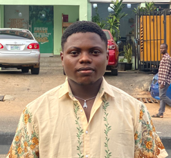

Ighorodje Precious

Summary
Resourceful and dynamic profession with good organization/management
skills necessary for developing winning strategies to help maximize
opportunities, enhance perfomance and productivity.
Education
-
Bs.c Business Administration, Faculty of Management science - National
Open University Nigeria (2023-Present)
Work Experience
-
Cyber Cafe Attendant - Petech Cafe.
(2017-2018) - Warri Delta State, Nigeria.
-
help in the printing out and photo-copying of documents with
microsoft word.
- assisted customers in editing documents with microsoft.
-
followed up with client to ensure optimal customer satisfaction
following support engagement and proplem resolution.
-
Studio Manager - Okey's Studio.
(2021-2023) - Ikeja Lagos State, Nigeria.
- in charge of studio mentainance.
- produced music tracks.
- mix and master audio tracks.
-
followed up with client to ensure optimal customer satisfaction
following support engagement and proplem resolution.
Skills
- HTML
- Piano expertise
- Music theory knowledge
- Improvising abilities
- Attention to detail
- Determination
- Creativity
- Team leadership
- customer service
- Music Production
- mixing and mastering audio engineer
Awards and Certificate
-
The Complete Web Development Bootcamp
- Udemy(2023-Present)
Extra-curricular Activities
Contact me
back to top